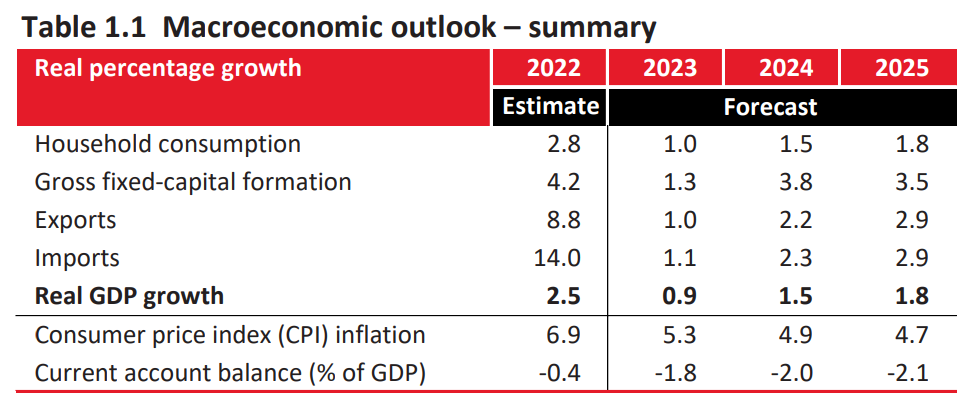

graph LR
A((Budget Documents PDF)) -->|Chunking<br>Vectorization| B{Chroma DB}
C[User Query] -->|Vectorization| D{Chroma DB}
D --> E[Top-n Similar Chunks]
E --> F{Large Language <br>Model Context Window}
F --> G((Answer))
style A fill:#ece7f2,stroke:#333,stroke-width:2px
style B fill:#a6bddb,stroke:#333,stroke-width:2px
style C fill:#ece7f2,stroke:#333,stroke-width:2px
style D fill:#a6bddb,stroke:#333,stroke-width:2px
style E fill:#2b8cbe,stroke:#333,stroke-width:2px
style F fill:#a6bddb,stroke:#333,stroke-width:2px
style G fill:#2b8cbe,stroke:#333,stroke-width:2px
Transforming National Budget Documents into Queryable Knowledge
A post about automating the data retrieval process from PDF documents using LangChain and the OpenAI API.
The challenge
One of the claims of generative AI is that it will free humans from labourious tasks which are currently tedious to do manually and challenging to automate. In this article, we’ll explore how we can use LangChain to automate the process of extracting information from PDF documents.
The National Treasury in South Africa produces a fantastically informative budget review each year. It includes headline figures like GDP growth, inflation, revenue and expenditure, as well as more detailed information about the budget for each government department. In addition, the budget speech is delivered by the Minister of Finance, and contains a wealth of information about the budget, including the government’s priorities for the year, and the reasoning behind the budget allocations.
If we want to get specific information from these documents, we can read through them and extract the information manually, searching for specific terms with the control + F functionality. This is a time consuming process, and it’s easy to make mistakes. What if we could ask a computer to do it for us?
Note
There are, in addition to the PDF documents a series of excel files that National Treasury releases too. These files do contain the information that we want, but are not in an easily machine readable format.1 Useful tools like EconData from Codera Analytics make it much easier to access this data programatically.
The solution: a vector database and a Large Language Model
LangChain is a framework that allows us to connect a large language model to our own data. In this case, it allows to transform the South African National Budget Reviews and Budget Speeches into an interactive, queryable knowledge base. The final output in this case is a table of summary statistics that would have taken a human hours to compile, but which we can now generate in seconds.
In essence, to transform budget documents into a queryable database, we read in the PDFs, segment them into chunks, and store the text in a database. To query this database, we use a simple similarity calculation to find the most relevant chunks of text, which are then fed to a large language model to answer our questions.
Here is a diagram of the process:
An example: what was Consumer Price Inflation in 2022?
Say for instance that we want to know what Consumer Price Inflation was in 2022 in South Africa. We can ask the question in a natural language query, and the system will return the answer. Here is the query and the answer, along with the source documents that the system used to answer the question:
| Query | Result | Source documents |
|---|---|---|
| What was Consumer Price Index inflation in 2022? | 6.9% | Document(page_content=to moderate in 2023, before rising gradually over the medium term . inflation peaked in the third quarter and averaged 6.9 per cent during 2022 . is projected is estimated to ease to 5.3 per cent in 2023. Global crude oil and food prices remain sources of inflationary pressure. Electricity prices have been up by 4.6 per cent over the medium term compared to the 2022 MTBPS and are’, metadata={‘source’: ‘c:\Users\User\Documents\Recon\langchain-budget-speech-demo\budget-documents\budget-review-2023.pdf’, ‘page’: 39}), |
| Document(page_content=‘CHAPTER 1 NAVIGATING AN UNEVEN ECONOMIC RECOVERY Real percentage growth 2022 2023 2024 2025 Estimate Forecast Household consumption 2.8 1.0 1.5 1.8 Gross fixed-capital formation 4.2 1.3 3.8 3.5 Exports 8.8 1.0 2.2 2.9 Imports 14.0 1.1 2.3 2.9 Real GDP growth 2.5 0.9 1.5 1.8 Consumer price index (CPI) inflation 6.9 5.3 4.9 4.7 Current account balance (% of GDP) -0.4 -1.8 -2.0 -2.1’, metadata={‘source’: ‘c:\Users\User\Documents\Recon\langchain-budget-speech-demo\budget-documents\budget-review-2023.pdf’, ‘page’: 27}), |
In the table above, we can see two of the chunks of text that are most similar in terms of content to our query, from the ChromaDB database that contains the 2023 Budget Review and Budget Speech broken into 2000 token chunks. The first chunk in our table is from page 39 of the budget review, and the second chunk is from page 27. Both of these chunks contain the information that we are looking for, and the system has correctly identified them as the most relevant chunks.
These chunks are then passed to the OpenAI GPT-3.5 large language model, which is able to take in the question and the context, and then return to us the answer. In this case, the answer is 6.9%, which is correct, as we can see in the table from the budget review below (which is the same as the second source document in the markdown table above).

What is going on in the background?
You can have a look at my GitHub repository for the full code, but I’ll walk through the main steps here.
- Set Up: The first step is to set up LangChain using an OpenAI key. This example uses OpenAI for both the language model and the embeddings.
- Load Documents: LangChain can load multiple documents at once. In this example, PDF files containing the 2023 budget review and 2023 budget speech are loaded.
- Split Data: The data is then split into chunks. Each chunk corresponds to a portion of information from a specific page of the budget documents.
- Create a Database: A vector store database is created to store and index the document embeddings, which are vector representations of the text chunks. The embeddings are generated using OpenAI and stored in a database using a tool named ChromaDB.
- Retrieve Relevant Documents: A retriever is then set up to query the vector database and return relevant documents. The number of documents returned can be adjusted according to the user’s needs. In this case, I used fewer chunks with larger number of tokens per chunk compared to the default as it worked best.
- Language Model Chain: After setting up the retriever, a retrieval-question-answering chain is created using OpenAI. This chain is capable of answering queries based on the contents of the chunks that are passed to it, depending on the words in the query.
- Format Output: A function is created to present the results and source documents neatly. This is what we show in the markdown table above.
- Querying: The system is now ready for queries. A query is input and the system returns the most relevant response based on the indexed documents. In this case, we worked through each years’ budget documents from 2010 to 2022 to find values for seven data series.
Have a look at the output in the table below.
| Selected series from Budget Reviews and Budget Speeches (2010-2022) | |||||||||||||
|---|---|---|---|---|---|---|---|---|---|---|---|---|---|
| Key | 2010 | 2011 | 2012 | 2013 | 2014 | 2015 | 2016 | 2017 | 2018 | 2019 | 2020 | 2021 | 2022 |
| Budget balance (% of GDP) | -5.30 | -4.80 | 5.2 | -4.00 | -3.9 | -3.9 | -3.40 | -4.30 | -3.70 | -6.30 | -14.00 | -5.70 | -4.2 |
| GDP (current ZAR[billions]) | 2.67 | 2.94 | 3.39 | 3.8 | 4.32 | 4.96 | 5.09 | 4.93 | 6.17 | 6.6 | |||
| GDP growth (%) | 3.40 | 3.10 | 2.5 | 1.80 | 1.4 | 1.3 | 0.50 | 0.01 | 0.70 | 0.30 | -7.20 | 4.80 | 2.5 |
| General government debt (% of GDP) | 25.70 | 33.50 | 41.8 | 34.90 | 40.8 | 44.8 | 45.70 | 53.30 | 55.60 | 61.60 | 80.30 | 69.50 | 71.1 |
| General government expenditure (% of GDP) | 30.80 | 32.60 | 32.9 | 33.20 | 32.0 | 33.9 | 32.80 | 33.20 | 32.90 | 29.40 | 41.70 | 33.20 | 32.6 |
| General government revenue (% of GDP) | 28.30 | 27.70 | 27.7 | 29.20 | 28.1 | 30.0 | 29.40 | 28.80 | 28.80 | 29.40 | 27.70 | 27.50 | 28.5 |
| Inflation (CPI) (%) | 4.30 | 5.00 | 5.4 | 5.70 | 5.3 | 4.6 | 6.40 | 5.30 | 4.70 | 4.10 | 3.30 | 4.80 | 6.9 |
| Source: National Treasury of South Africa | |||||||||||||
Visualising the data
We can also make a plot of our selected series. Mouse over the points to see the exact values.
What do we learn?
There are some missing values, particularly in the series GDP (current ZAR[billions]) and Budget balance (% of GDP).
In addition, in 2019, the government expenditure figure is incorectly plucked from the PDF document as 29.40% of GDP, when in reality, this was 35.70% of GDP. This is a significant error, and it is not clear why this happened. It is possible that the PDF document was not correctly parsed, or that the OpenAI API made an error extracting this value from the text chunk.
In order to overcome these kinds of errors, experimenting with multiple pipelines and chunk sizes is probably the best way to go. This was just a demonstration, and there is certainly a possiblity to make the pipline more robust and less error prone.
Conclusion
Though we have used budget data from South Africa in this case, the same approach can be used for any kind of data. LangChain has document loaders for text, PDF, and HTML, and can be used to extract information from many kinds of document.
Footnotes
There are ideosyncracies between each year that mean ingesting this data into a tidy format is time consuming↩︎